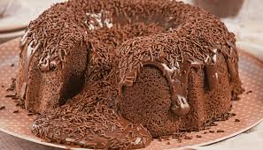

confeitaria pão e vinho

bolo de chocolate
ingredientes
- 2 xicara de nescal
- 3 ovos
- 2 xicaras de açucar
- 1/2kg de trigo
- 1 xícara de oléo
- 1 colher de fermento e pó
' modo de preparo
1 bata da batedeira os ovos,açucar,margarina e depois coloque a farinha de trigo aos poucos.
2 por ultimo o fermento,bata bem ate ficar uma massa lisa sem bolinhas.
3 juntar a forma com trigo.
4 coloque o bolo na forna e leve para o forno.